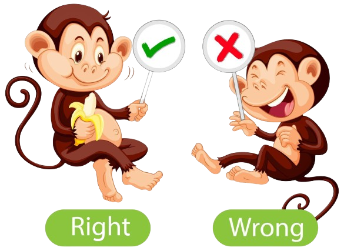

ROE K139
Rules of Engagement K139
1. CLANS THAT SUPPORT ROE:
1.1) State in the first line of their clan description some iteration of 'We follow K139 ROE'
1.2) Name a diplomat to deal with disputes and add to clan description
1.2) Name a diplomat to deal with disputes and add to clan description
2. RESOURCES
2.1) All resources (including Dragon Mounds, Wellsprings and Sacred Potion) inside clan territory belong to that clan. Non clan members mining within another clan's territory can be attacked without compensation by any member of the clan whose territory is being poached. We encourage a warning to inform the player of the rules, however this is not required.
2.2) Mounds, Springs and Sacred Potion outside clan territory must be registered first & only by a player in a ROE clan, then occupied within 15 mins of registration or it will be deemed abandoned and free to register by another player. Register mounds in chat 'K139 GOLD REG', 'K139 TAR REG' and 'K139 SACRED REG'
2.3) A player in a ROE clan can only register 1 mound, 1 spring and 1 Sacred Potion in a 24hr period; collecting from all three at once is allowed. Players in a non ROE clan are not permitted to register or occupy any of these.
2.4) A player can transfer their mound, spring or sacred potion to another player, provided the new player registers it and does not breach 2.3
2.5) Players in violation of 2.2, 2.3, 2.4 shall be issued a warning and potential ban from registering and collecting.
1st Warning = Verbal Warning
2nd Warning = 24 hour ban
3rd Warning = 1 week ban
2.6) Resources outside clan territory (excluding mounds, wellsprings, sared potions) are first come first serve, regardless of lines en route. The first player in a ROE clan to arrive (in wild) is the one that keeps the RSS.
2.2) Mounds, Springs and Sacred Potion outside clan territory must be registered first & only by a player in a ROE clan, then occupied within 15 mins of registration or it will be deemed abandoned and free to register by another player. Register mounds in chat 'K139 GOLD REG', 'K139 TAR REG' and 'K139 SACRED REG'
2.3) A player in a ROE clan can only register 1 mound, 1 spring and 1 Sacred Potion in a 24hr period; collecting from all three at once is allowed. Players in a non ROE clan are not permitted to register or occupy any of these.
2.4) A player can transfer their mound, spring or sacred potion to another player, provided the new player registers it and does not breach 2.3
2.5) Players in violation of 2.2, 2.3, 2.4 shall be issued a warning and potential ban from registering and collecting.
2.6) Resources outside clan territory (excluding mounds, wellsprings, sared potions) are first come first serve, regardless of lines en route. The first player in a ROE clan to arrive (in wild) is the one that keeps the RSS.
3. TAXES/INGOTS
Ingots produced in your Capitol can only be used by the palace to distribute kingdom bonuses: they are useless to individual players/clans. Players holding excess ingots
see 3.2) make themselves targets to outside kingdoms; our goal is to keep the ingots in OUR kingdom!
3.1) To pay taxes (send ingots to the palace), click on your Capitol > Taxes > send ALL to the palace
3.2) Excess ingots is defined by a player holding more than their city level x 1,000 (ex: city level 20 x 1,000 = 20k ingots)
3.3) Players holding excess ingots as defined in 3.2 are subject to collection by the palace and/or Royal Guard
3.4) Collection process: coordinates of a player holding excess ingots are shared with the palace and Royal Guard for collection. A scouting will be executed to confirm that the player in question is holding excessive ingots. Immediately after the scouting an attack for collection will take place by the palace/Royal Guard without entitlement for compensation
3.5) The Royal Guard will be designated by a Royal Decree listing all members of the Royal Guard. The Royal Guard will establish a chat to post all battle reports showing the collection of unpaid taxes.
3.1) To pay taxes (send ingots to the palace), click on your Capitol > Taxes > send ALL to the palace
3.2) Excess ingots is defined by a player holding more than their city level x 1,000 (ex: city level 20 x 1,000 = 20k ingots)
3.3) Players holding excess ingots as defined in 3.2 are subject to collection by the palace and/or Royal Guard
3.4) Collection process: coordinates of a player holding excess ingots are shared with the palace and Royal Guard for collection. A scouting will be executed to confirm that the player in question is holding excessive ingots. Immediately after the scouting an attack for collection will take place by the palace/Royal Guard without entitlement for compensation
3.5) The Royal Guard will be designated by a Royal Decree listing all members of the Royal Guard. The Royal Guard will establish a chat to post all battle reports showing the collection of unpaid taxes.
4. K139 KINGDOM OF PEACE:
Outside of sanctioned PvP events, in K139 we are a kingdom of peace AT ALL TIMES, therefore it is prohibited to:
-Explore/attack ROE cities and mines (AT ALL TIMES)
-Explore/attack clan portals, memorial portals or buildings (i.e. clan forts), regardless of Kingdom status or ROE.
Exceptions:
4.1) Outlaws (see chat 'K139 WARNED AND OUTLAW')
4.2) Players over 100K, who do not belong to a ROE clan.
4.3) Blow-by-blow attacks, defined in point 7) COMPENSATION FOR VIOLATIONS.
4.4) Attacks on outsiders occupying mines within a clan's territory (see 2.1)
4.5) Players in unregistered mounds or springs outside clan territory (attacker must register first)
4.6) Hostile portals outside clan territory; A battle report is required to justify the attack
PORTALS DEFINED:
4.7) Clan Portal - a portal open inside a clan's territory; these are forbidden to attack at all times, even if they are considered to be 'hostile'
4.8) Active Event portal - a portal opened surrounding an event epic monster (ex: doomsday, arachania, shadow city, etc); these are forbidden to attack at all times, unless proven hostile with a battle report for evidence
4.9) Memorial Portal - portals surrounding a city or capital to let players know that city is off limits to attack due to instances of bereavement, hospitilization, illness, etc. Attacks to memorial portals and the city they surround are strictly forbidden at all times
4.10) BUILDINGS OF SEEMINGLY ABANDONED CLANS
Clan buildings of abandoned clans can only be attacked after official authorization from the palace according to the following process:
1. Request to attack seemingly abandoned clan should be addressed to Quaestor by the leader of any ROE compliant clan
2. Quaestor will message leader and all supervisors of seemingly abandoned clan, giving them 72 hours to express that they are not abandoned
3. If no response is received in the given 72 hours delay, Quaestor will issue an official authorization to attack abandoned clan buildings, which will be posted in the K139 WARNED & OUTLAW - READ ONLY chat channel.
Failing this official authorization, any attack on clan buildings of ROE compliant clans will be considered as a breach of ROE and be handled according to sections 6 and 7 of the ROE
-Explore/attack ROE cities and mines (AT ALL TIMES)
-Explore/attack clan portals, memorial portals or buildings (i.e. clan forts), regardless of Kingdom status or ROE.
Exceptions:
4.1) Outlaws (see chat 'K139 WARNED AND OUTLAW')
4.2) Players over 100K, who do not belong to a ROE clan.
4.3) Blow-by-blow attacks, defined in point 7) COMPENSATION FOR VIOLATIONS.
4.4) Attacks on outsiders occupying mines within a clan's territory (see 2.1)
4.5) Players in unregistered mounds or springs outside clan territory (attacker must register first)
4.6) Hostile portals outside clan territory; A battle report is required to justify the attack
PORTALS DEFINED:
4.7) Clan Portal - a portal open inside a clan's territory; these are forbidden to attack at all times, even if they are considered to be 'hostile'
4.8) Active Event portal - a portal opened surrounding an event epic monster (ex: doomsday, arachania, shadow city, etc); these are forbidden to attack at all times, unless proven hostile with a battle report for evidence
4.9) Memorial Portal - portals surrounding a city or capital to let players know that city is off limits to attack due to instances of bereavement, hospitilization, illness, etc. Attacks to memorial portals and the city they surround are strictly forbidden at all times
4.10) BUILDINGS OF SEEMINGLY ABANDONED CLANS
Clan buildings of abandoned clans can only be attacked after official authorization from the palace according to the following process:
1. Request to attack seemingly abandoned clan should be addressed to Quaestor by the leader of any ROE compliant clan
2. Quaestor will message leader and all supervisors of seemingly abandoned clan, giving them 72 hours to express that they are not abandoned
3. If no response is received in the given 72 hours delay, Quaestor will issue an official authorization to attack abandoned clan buildings, which will be posted in the K139 WARNED & OUTLAW - READ ONLY chat channel.
Failing this official authorization, any attack on clan buildings of ROE compliant clans will be considered as a breach of ROE and be handled according to sections 6 and 7 of the ROE
5. VIOLATIONS
A violation is defined as any ROE player not complying to the rules in this document. Violations should be reserved for the most serious offenses. We encourage players to be able to work with each other to resolve these disputes
Violations will no longer address:
5.1) Cases addressed by players other than the clan leader or diplomat
5.2) Disputes over resource tiles in the wild.
**There can be exceptions depending on the severity of the offense or scenario**
Violations will no longer address:
5.1) Cases addressed by players other than the clan leader or diplomat
5.2) Disputes over resource tiles in the wild.
**There can be exceptions depending on the severity of the offense or scenario**
6. VIOLATIONS PROCESS
Disputes should be resolved by the following steps (disputes older than 4 days will be dismissed):
6.1) Try to establish player to player contact and work out the situation first. Also notify your Diplomat if player to player contact did not result in a response or agreement within 12 hours. Your Diplomat will then have 12 hours to negotiate a response or agreement with the players Diplomat
6.2) If there is no resolution or response within 24 hours from the infraction, Diplomats or Clan Leader can post a brief description of the violation in 'K139 VIOLATIONS' along with a copy of the attack report for evidence
6.1) Try to establish player to player contact and work out the situation first. Also notify your Diplomat if player to player contact did not result in a response or agreement within 12 hours. Your Diplomat will then have 12 hours to negotiate a response or agreement with the players Diplomat
6.2) If there is no resolution or response within 24 hours from the infraction, Diplomats or Clan Leader can post a brief description of the violation in 'K139 VIOLATIONS' along with a copy of the attack report for evidence
7. VIOLATIONS COMPENSATION:
Illegal attacks are subject to retaliation on a hit-for-hit basis or compensation (not both) to the victim only; players that choose to defend their member are risking their troops to defend and not entitled to compensation. Please note: this is a guide, players are free to negotiate on these amounts to what they think is reasonable and fair. The guide is to prevent players from being extorted.
7.1) Compensation must be attempted to be paid within 24hrs of the agreement/ruling. Any compensation amounts are AFTER caravan taxes (20%)
7.2) Illegal attack on Dragon Mound, Wellspring or Sacred Potion:
Dragon Mound: Building as many gold mines as needed to match the worth of the gold taken + 5 million silver + troop loss
Wellspring: TAR taken x 2k silver + 5 million silver + troop loss
Sacred Potion: Sacred Potion taken x 2k silver + 5 million silver + troop loss
7.3) Illegal attack on portal, city, or mine: Attackers city level x 100k silver + troop loss + resource loss
7.4) Illegal scouting on portal, city, or mine: Attackers city level x 50k silver + troop loss + resource loss
7.5) Clan buildings (forts and clan capitals):
- A) Scouting: 3 million silver
- B) Attack without destroying: Attacker's city level x 500k silver
- C) Attacking & destroying: Resources required for rebuild + attacker's city level x 2 million silver
- D) Outlaw status may be applicable; in the event outlaw status is declared, the Royal Decree will contain conditions of lifting Outlaw status
7.6) Troop Loss Calculator: For each troop type;
# of units x unit silver revival cost x 3
(example: 200 spearmen units x 40 silver revival cost x 3 = 24,000 silver)
Silver revival cost can be found under 'Characteristics' section after viewing a unit type in attack
7.7) In the event a player has reached the end of the violations process and refuses to compensate, this player's information will be shared with the Royal Guard for collection and warned/outlaw status may be applicable
7.1) Compensation must be attempted to be paid within 24hrs of the agreement/ruling. Any compensation amounts are AFTER caravan taxes (20%)
7.2) Illegal attack on Dragon Mound, Wellspring or Sacred Potion:
Dragon Mound: Building as many gold mines as needed to match the worth of the gold taken + 5 million silver + troop loss
Wellspring: TAR taken x 2k silver + 5 million silver + troop loss
Sacred Potion: Sacred Potion taken x 2k silver + 5 million silver + troop loss
7.3) Illegal attack on portal, city, or mine: Attackers city level x 100k silver + troop loss + resource loss
7.4) Illegal scouting on portal, city, or mine: Attackers city level x 50k silver + troop loss + resource loss
7.5) Clan buildings (forts and clan capitals):
- A) Scouting: 3 million silver
- B) Attack without destroying: Attacker's city level x 500k silver
- C) Attacking & destroying: Resources required for rebuild + attacker's city level x 2 million silver
- D) Outlaw status may be applicable; in the event outlaw status is declared, the Royal Decree will contain conditions of lifting Outlaw status
7.6) Troop Loss Calculator: For each troop type;
# of units x unit silver revival cost x 3
(example: 200 spearmen units x 40 silver revival cost x 3 = 24,000 silver)
Silver revival cost can be found under 'Characteristics' section after viewing a unit type in attack
7.7) In the event a player has reached the end of the violations process and refuses to compensate, this player's information will be shared with the Royal Guard for collection and warned/outlaw status may be applicable
8. CLASH FOR THE THRONE (COT):
COT is a 48-hour PvP event for conquest points.
(CP) where the top 100 players in the ranking vote for the next King. During this event and as provided in Point 4) of this ROE, it is indicated:
8.1) All types of attacks must be carried out OUTSIDE K139, following the FairPlay agreements established in the IKA.
8.2) Any attack carried out in this kingdom will be sactioned according to what is established in point 5) of this ROE.
8.3) The kingdom has established communication channels for PvP (CP Exchange), see the chat groups.
(CP) where the top 100 players in the ranking vote for the next King. During this event and as provided in Point 4) of this ROE, it is indicated:
8.1) All types of attacks must be carried out OUTSIDE K139, following the FairPlay agreements established in the IKA.
8.2) Any attack carried out in this kingdom will be sactioned according to what is established in point 5) of this ROE.
8.3) The kingdom has established communication channels for PvP (CP Exchange), see the chat groups.
9. CLAN MARCHES:
Not allowed at any time except:
9.1) Against the Outlaws declared by the palace in 'K139 WARNED & OUTLAW
9.2) Wars between clans if declared with the approval of the palace.
9.3) Portals or Players during KVK
9.1) Against the Outlaws declared by the palace in 'K139 WARNED & OUTLAW
9.2) Wars between clans if declared with the approval of the palace.
9.3) Portals or Players during KVK
10. CLASH OF KINGDOMS (KVK)
Global event, similar to capture the flag.
10.1) During KVK K139 clans SHOULD attack all foreign portals or report them in the Kingdom Chat or KICK ASS chat
10.2) Against other kingdoms, K139 can attack any city or portal of players above 100k might
10.3) Against other kingdoms, K139 players may NOT attack clan buildings (forts, clan capitals), memorial portals, active event portals and occupied RSS, DM and TAR.
10.4) Please note that inter-kingdom agreements do not include ANY form of compensation, however it may be subject to negotiate on a voluntary basis. We encourage players to learn to defend themselves. Bigger clans/players with experience are encouraged to help and monitor smaller clans
10.1) During KVK K139 clans SHOULD attack all foreign portals or report them in the Kingdom Chat or KICK ASS chat
10.2) Against other kingdoms, K139 can attack any city or portal of players above 100k might
10.3) Against other kingdoms, K139 players may NOT attack clan buildings (forts, clan capitals), memorial portals, active event portals and occupied RSS, DM and TAR.
10.4) Please note that inter-kingdom agreements do not include ANY form of compensation, however it may be subject to negotiate on a voluntary basis. We encourage players to learn to defend themselves. Bigger clans/players with experience are encouraged to help and monitor smaller clans
11. OFFICIAL KINGDOM CHATS
See the TB Kingdom ROE Chat Group.